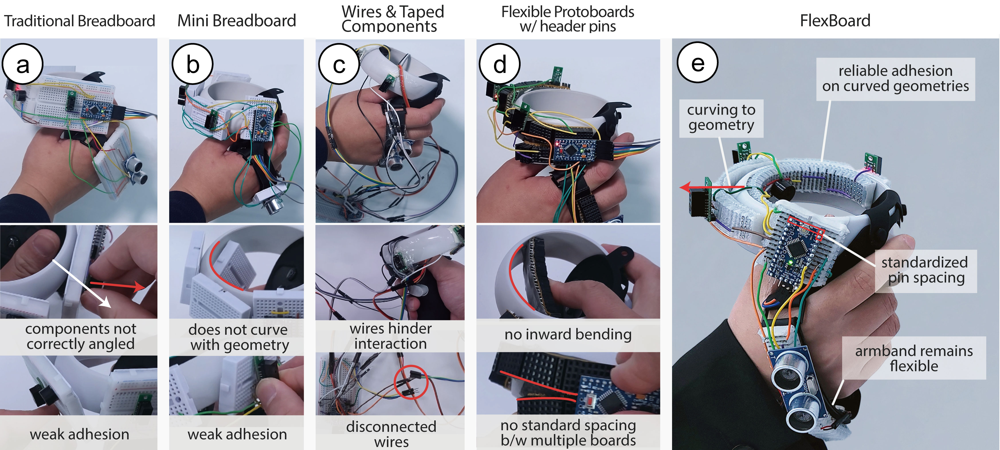
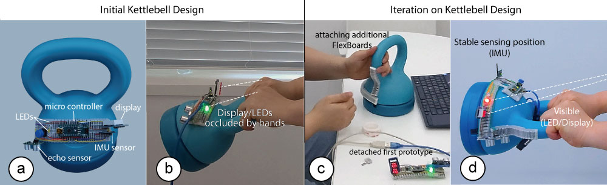
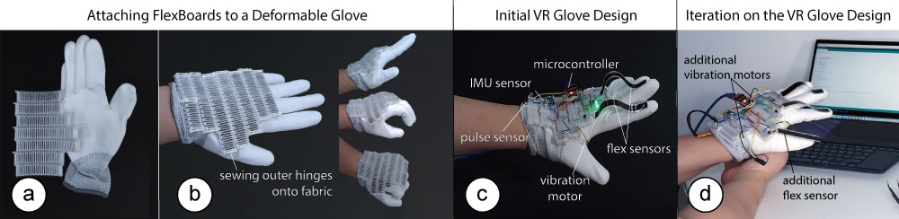

FlexBoard: A Flexible Breadboard for Interaction Prototyping on Curved and Deformable Surfaces
Figure 1. (a,b) FlexBoard is a flexible breadboard that consists of a living hinge pattern with inserted terminal strips. It enables in-situ prototyping on curved and deformable surfaces. Here we used FlexBoard to prototype interactive functionality on (c) the curved body of a VR controller and (d) kettlebell, as well as (e) a deformable glove.
Abstract
We present FlexBoard, an interaction prototyping platform that enables rapid prototyping with interactive components such as sensors, actuators and displays on curved and deformable objects. FlexBoard offers the rapid prototyping capabilities of traditional breadboards but is also flexible to conform to different shapes and materials. FlexBoard's bendability is enabled by replacing the rigid body of a breadboard with a flexible living hinge that holds the metal strips from a traditional breadboard while maintaining the standard pin spacing. In addition, FlexBoards are also shape-customizable as they can be cut to a specific length and joined together to form larger prototyping areas. We discuss FlexBoard's mechanical design and present a technical evaluation of its bendability, adhesion to curved and deformable surfaces, and holding force of electronic components. Finally, we show the usefulness of FlexBoard through 3 application scenarios with interactive textiles, curved tangible user interfaces, and VR.
Introduction
Prototyping physical user interface is an essential process for product designers and researchers to explore new user interface designs, test an interactive system in practical use cases, and study the interaction between humans and technology . Building such interactive prototypes often requires the integration of various electronic components including sensors, speakers, displays, and other input/output components into physical objects that can be curved or made of deformable materials (e.g., textiles). A popular tool for rapid prototyping of such electronics is the breadboard, as it allows testing the functionality of a circuit without soldering. Users can easily insert electronic components and rapidly rearrange them as needed. While traditional breadboards support traditional circuit prototyping where the positioning on the prototype does not matter (e.g., voltage dividers), they do not support interaction prototyping well where the main focus is on positioning and testing input and output components (e.g., sensors, actuators, displays) on the surface of the prototype.
To address this, researchers developed different types of breadboards with customizable shapes that better integrate into prototypes with different shapes and material properties. For instance, BitBlocks are flat modular mini-breadboards that can be combined into different 2D shapes. However, since BitBlocks are flat and rigid, they are difficult to attach to a prototype's curved surface. CurveBoards , in contrast, are integrated directly with the curved surface of prototypes. Unfortunately, since the CurveBoard is part of the 3D printed prototype geometry, it cannot be repositioned without refabricating the entire prototype.
To be able to reposition a breadboard on an object during iterative prototyping, researchers developed flexible prototyping platforms that can bend around curved geometries. For instance, Jellyboard is a flexible breadboard that embeds copper strips into a silicone mold and attaches female header pins to the strips. However, it does not preserve the standard pin layout and spacing of a typical breadboard and is limited to one-directional bending since the header pins collide with each other when bending upwards.
In this paper, we present FlexBoard, a flexible breadboard with upwards and downwards bending capability for prototyping on curved and deformable surfaces that can be fabricated on an off-the-shelve 3D printer and that provides standardized pin spacing and terminal line layouts (Figure 1). To enable FlexBoard's bending capabilities, we replaced the traditional rigid breadboard body with a living hinge structure, which can reversibly bend in both directions. To maintain electronic prototyping capabilities with standard pin spacing, we insert the metal strips of the traditional breadboard into the individual hinges of the FlexBoard. Thus, FlexBoard works like a traditional breadboard with the added capability of being able to bend both up and down by 360° with only 30 segments (FlexBoard length: 7.62cm). While the pin distance changes when a FlexBoard is bent, our technical evaluation shows that components with up to 5 parallel pins can be inserted into a fully bent FlexBoard.
To further enable makers to match the breadboard to the prototype's geometry, we designed FlexBoard to be one long strip that can be cut into smaller segments. Several FlexBoards can also be attached to each other side-by-side to form a wider prototyping area. Thus, by cutting and joining FlexBoard pieces into different layouts, users can build a variety of custom breadboard shapes on curved or deformable surfaces.
In summary, we contribute:
- a novel electronic prototyping platform in the form of a flexible breadboard, called FlexBoard, with standard pin spacing that can be fabricated on an off-the-shelve 3D printer;
- the mechanical design of FlexBoard which enables bending up and down for prototyping on curved and deformable surfaces;
- three application scenarios that demonstrate the usefulness of FlexBoard for prototyping wearables, VR applications, and curved interactive objects.
FlexBoard
Prototyping interactive objects requires distributing input and output components (e.g., sensors, actuators, displays) on the surface of the prototype with complex geometries. This is different from traditional circuit engineering which focuses on certain signal properties where the positioning on the prototype does not matter (e.g., AC-DC-converter, LED drivers, etc.).
To address the needs of makers when prototyping interactive circuits on curved surfaces we developed FlexBoard, a flexible breadboard with upwards and downwards bending capability and customizable dimensions. In this section, we first describe alternative prototyping approaches and then introduce FlexBoard's mechanical design as well as outline the prototyping process with FlexBoard.

Figure 2. Alternative prototyping approaches: (a) traditional breadboards do not adhere to the curvature of a prototype and are hard to attach; (b) mini-breadboards fit closer to a curved geometry than traditional breadboards but are still hard to attach and do not fully conform to an object's curvature; (c) attaching components with tape enables placing components directly on the object but the long wires hinder the mobility of the interactive object as wires and components might unplug or detach when the object is moved by the user, (d) flexible protoboards conform better to a curved geometry but are not able to bend upwards and \modify{cannot be joined together easily with a standard pin spacing for components with parallel pins}, and (e) Flexboards bend both \modify{up- and downward} enabling directly application and good adhesion to curved prototypes. In addition, they maintain flexibility for deformable materials like the armband.
Alternative Prototyping Approaches
To prototype circuits and sensors on curved surfaces, makers have several prototyping tools available, each with different benefits and limitations.
Traditional Breadboard: A popular way to prototype circuits are traditional breadboards. They allow to quickly reconfigure circuits by plugging and unplugging components supported by a standardized pin layout. However, because of their rigid and rectangular form factor, they are hard to attach to a curved object to explore the positioning and angle of interactive components such as sensors and displays. The contact point between the curved surface and the flat breadboard is small which makes gluing difficult and the breadboard does not follow the curvature of the object which exploring interaction with the object difficult (Figure 2.a). In addition, when prototyping on deformable objects (e.g., textiles), they limit their flexibility.
Mini-breadboard: Mini-breadboards are easier to integrate with 3D prototypes because of their smaller form factor. However, attaching them to a curved surface suffers from similar limitations as regular-sized breadboards since they also make contact with the curved surface in a small area which makes reliable adhesion difficult (Figure 2.b). Repeated plugging and unplugging of electronic components can thus cause the mini-breadboard to fall off. In addition, similar to traditional breadboards, they limit the bendability of deformable materials.
Traditional Breadboard + Attaching Interactive Components with Tape: Another way how makers prototype circuits on curved objects is to attach electronics as well as input and output components with tape and route them with long wires to a breadboard located next to the prototype that houses the remaining circuit. However, in-situ testing is difficult because the breadboard is not well integrated with the prototype. Figure 2.c demonstrates these limitations with the example of a VR controller which requires mobility to be used in a room-scale VR environment. The long wires can disconnect or entangle while interacting with the object. In addition, the external breadboard has to be moved together with the prototype, which will require the user to attach the breadboard to the forearm which might also influence the user's experience when interacting with the prototype.
Flexible Protoboard with Header Pins: Some makers solder female header pins on a flexible protoboard to create a deformable prototyping platform. The female header pins allow plugging and unplugging components while the flexible protoboard allows it to bend. However, because the header pins protrude from the surface, bending is limited to only one direction (Figure 2.d). Additionally, Protoboards do not support standard spacing when put side-by-side which makes integrating electronic components such as microcontrollers that have multiple rows with pins difficult (Figure 2,d).
Flexboard: FlexBoard provides the functionality of a traditional breadboard, i.e. can be used in a flat state for prototyping, provides standardized pin spacing, and allows to easily reconfigure the circuit through plugging and unplugging of components, while also providing the added benefit that it can adhere to the curved geometry of a prototype by being able to bend in upward and downward direction (Figure 2.e). This enables makers to prototype either directly on the curved geometry or in the traditional way on a flat table or even iterate between those two methods. When prototyping on the curved geometry, FlexBoard enables makers to reposition interactive components on the surface of the prototype, to quickly iterate on the interactive functionality.
Flexible Bending with Living Hinge Pattern
FlexBoard is based on a living hinge design that enables it to bend both up and down, allowing it to adapt to differently curved object geometries. The detailed dimensions of FlexBoard can be found in the supplementary file.
Figure 3. (a) FlexBoards consist of a living hinge pattern, which (b) holds terminal strips. (c) Final assembled FlexBoard.
Hinges as Holders of Terminal Strips: Each hinge in the FlexBoard hinge pattern represents one terminal strip in a breadboard. To convert a hinge into a terminal strip, we insert one strip (5 pins, same as on a traditional breadboard) into each hinge (Figure 3). Since the terminal strip's pin spacing is standardized, FlexBoard works with standard electronic components similar to a traditional breadboard. We also maintain the standardized spacing between terminal strips, i.e., hinges are spaced 2.54mm apart. Bending FlexBoard leaves the terminal column unaffected since individual hinges maintain their shape. However, the distance between hinges changes while bending, and thus spacing between terminal columns may change. Users can accommodate this change in spacing by leaving component pins longer or using additional long header pins, which move with the Flexboard. Components with shorter pins (e.g., boxed ICs) can be plugged in while the FlexBoard is in a flat state. Upon bending, those components hold multiple hinges together, which locally reduces the bending capability but does not affect other areas on the FlexBoard.
Figure 4. Modifications to the traditional living hinge design: bridge structure to close the hinge's open side to increase the holding force for terminal strips.
Optimizing the Hinge Design to Hold Terminal Strips: In a traditional living hinge design, one side of the hinge is closed and one side of the hinge is open. When bending the hinge, the distance between the two walls of the hinge increases on the open side. When using such a design for FlexBoard, the holding force that keeps the terminal strip inside the hinge is reduced during bending, and as a result, the terminal strip may fall out of the hinge. To address this issue, we adjusted the traditional living hinge pattern to maintain the overall holding force during bending to keep the terminal strips in place. To accomplish this, we made the following modifications:
Bridge Structure: We close the previously open side of the hinge by adding a 'bridge structure' (Figure 4). We place the bridge structure in the middle of the hinge design to enable flexibility both upwards and downwards. Our technical evaluation, shows that this modification to the traditional living hinge design creates a holding force strong enough to keep the terminal strips inside the hinges during bending. The terminal strips are still held in place when bending a single hinge by 12° upwards and 12° downwards. Note that these bending angles are per hinge segment. A FlexBoard usually consists of many hinge elements and thus can bend around large angles. For instance, a FlexBoard can bend 360° both downwards and upwards with only 30 segments (7.62cm length).
Figure 5. Making FlexBoard's of custom length: (a) cutting a hinge, (b) two FlexBoards of custom length.
Cutting and Joining FlexBoards into Custom Shapes
Users can customize the length and width of FlexBoards by cutting off parts or by joining multiple FlexBoards together.
Adjusting Length by Cutting FlexBoards: Users can create FlexBoards of variable length by cutting a FlexBoard into differently sized pieces depending on the object geometry of the use case. To cut a FlexBoard into a custom length, users only have to cut both sides of the hinge and remove the metal strip (Figure 5).
Figure 6. Extending FlexBoards using ball joints: (a) ball joint, (b) joint socket, (c) two FlexBoard joined together.
Adjusting Width by Joining Flexboards: Users can also extend FlexBoard's overall width, i.e. create a wider breadboard. To do this, users connect two or more FlexBoards using a ball joint mechanism. We placed a ball structure on the left hand side of a FlexBoard on top of the bridge structure (Figure 6.a) and a corresponding ball joint socket on the right hand side of a FlexBoard (Figure6. b). This enables not only joining multiple FlexBoards together but also bending individual FlexBoards with respect to each other (Figure 6. c) which allows attaching FlexBoards on doubly curved surfaces (e.g., for wearables like an interactive VR glove). The joint structures are designed to offer the same pin spacing as on the traditional breadboard, i.e. the gap between two FlexBoard strips is 7.5mm, which allows users to plug components with two rows of pins (e.g., IC modules).
Prototyping with FlexBoard
In the following section, we outline different prototyping workflows that are supported by FlexBoard to create circuits on curved and deformable objects.
Cutting the FlexBoard into Shape: To prototype with FlexBoard, users start by cutting and joining FlexBoards to create a breadboard length and width that matches the prototype geometry and can accommodate the required electronic components (e.g., joining two FlexBoards to accommodate dual-pin components, such as IC chips and microcontrollers).
Prototyping Circuits: Makers can choose to first prototype their circuit, sensors, and other electrical components in the traditional way, i.e., in a flat form factor on a table to test if the circuit functions correctly. Subsequently, makers can attach the FlexBoard to the curved or deformable prototype geometry. Alternatively, makers can also start by attaching FlexBoards to the prototype and then insert electronic components.
Attaching FlexBoard to Objects:b To attach the FlexBoard to a target object, makers have different options. If the object's surface is smooth and adheres well to adhesive tape, users can use double-sided tape or (epoxy) glue by first applying the adhesive on the FlexBoard and subsequently pressing the FlexBoard on the prototype's surface. Another option is to use Velcro-Tape, which allows users to easily attach and detach the FlexBoard multiple times. When developing a prototyping platform with fabrics, users can also sew the FlexBoard onto the fabric by looping a thread through the living hinge, as illustrated by our deformable glove application.
Fabrication Process
The fabrication of a FlexBoard involves two steps: (1) 3D printing the living hinge structure, and (2) inserting the power strips into the hinge elements.
3D Printing: To fabricate FlexBoards, we 3D print the living hinge structure on a FDM 3D Printer (Model: Creality Ender-3, nozzle diameter: 0.3mm). We used a rigid PLA filament (eSun's ePLA natural or matte (black)) and a flexible Vinyl filament (eSun's ePA Nylon Natural) to print the hinge structure. Since the Vinyl filament enables FlexBoards with greater bendability than regular PLA, we use it for all FlexBoards in this paper. We set the layer height to 0.15mm in the slicer to preserve the details of the living hinge pattern. The maximum length of a FlexBoard depends on the size of the 3D printer. For our 3D printer, we were able to fabricate FlexBoards of 18.7cm maximum length, which corresponds to 73 terminal strips, and took 4 hours to print. We also tested how many of these maximum-length FlexBoards we can fabricate in one go and found that seven FlexBoards fit onto our 3D printer's build plate.
Extracting Terminal Strips: We extracted the terminal strips directly from existing breadboards (Adafruit ID:64). We peeled off the tape from the backside of the breadboards, which released most of the terminal strips from the board. To extract the remaining strips, we either used our own tape, placed it across the backside of the breadboard, and peeled it off to release more of the terminal strips or used a needle to push the remaining strips out.
Technical Evaluation
In this section, we evaluate the bendability of FlexBoard's living hinge pattern, how well FlexBoard adheres to curved surfaces, the holding force with which FlexBoard holds the electronic components in place, and FlexBoard's durability when undergoing repeated upward and downward bending.

Figure 7. Maximum bending angle for (a) upwards bending (PLA: 7.2°, Nylon: 12°), and (b) downwards bending (PLA: 9°, Nylon: 12°).
Bendability of FlexBoard
To evaluate the bendability of the living hinge pattern, we tested Flexboards printed with 2 different printing materials (regular PLA (eSun's ePLA matte (black)), flexible Nylon filament (eSun's ePA Nylon Natural)) under different bending angles. Our results show that the Nylon FlexBoards provide significantly higher flexibility when compared to the PLA FlexBoards with a maximum upward bending angle of 12° (compared to PLA: 9°) and a downward bending angle of 12° (compared to PLA: 7.2°).
Apparatus and Procedure: We printed 100 FlexBoards (50 PLA, 50 Nylon) 5.2cm in length, each containing 20 segments. We evaluated FlexBoard's bendability under 5 different bending angles (3° - 15°, in 3° increments) and 2 different bending directions (upward, downward) for the 2 different print materials. To bend the FlexBoards in a controlled way, we printed five cylinders with surface angles that corresponded to our experimental conditions. We started with the PLA FlexBoards and applied a new FlexBoard on the outside of each of the five cylinders to investigate if the FlexBoards break for the upwards bending angles. We then applied a new FlexBoard on the inside of each of the five cylinders to investigate if the FlexBoards break for the downward bending angle. We repeated the process 5 times, for a total of 5 FlexBoard results for each of the five inward and outward bending angles. We then repeated the process for the Nylon FlexBoards.
Results: Figure 7 shows the results of the experiment. The Nylon Flexboards provide significantly higher flexibility showing an average maximum upward bending angle of 12° (sd. 0°) and an average maximum downward bending angle of 12° (sd. 0°) while the PLA FlexBoards only achieved an average maximum upward bending angle of 9° (sd. 0°) and average maximum downward bending angle of 7.2° (sd. 1.5°).
Figure 8. Adhesion under the maximum upward and downward bending angles after 24h: (a) double-sided tape shows minimal detachment, (b) epoxy glue shows strong adhesion with no visible degradation after 24h, (c) velcro tape detaches after 24h at the maximum bend angle but stays attached at 9° with minimal visible detachment.
Adhesion of FlexBoards to Rigid Curved Surfaces
Prototyping with FlexBoards also requires reliable adhesion to curved geometries. Bending and attaching a FlexBoard on a curved geometry creates a retraction force because the FlexBoard tries to flex back into its initial straight state. A reliable adhesion method, therefore, should hold the FlexBoard in place even when bent to the maximum angle both upwards and downwards.
Apparatus and Procedure: We evaluated the adhesion properties of FlexBoard when using three different adhesion methods under the bending angles 12°, and 9° per segment in upward and downward directions. We used double-sided tape (3M Scotch VHB 5115), epoxy glue (Loctite Epoxy instant mix), and velcro tape (3M dual lock SJ3550). For each adhesion method, we printed 5 FlexBoards of 5.2cm in length, each containing 20 segments. We printed two wave-like geometries for each bending angle, as shown in Figure 8. After attaching each adhesion type to the FlexBoards, we placed the FlexBoard onto the wavy geometry. After 24 hours, we took a photo and investigated if any segments of the FlexBoard had detached.
Results: Figure 8 shows the results of the experiment. We found that 4 out of the 5 Flexboards that used double-sided tape stayed attached to the wavy geometry for the full 24h with only minimal detachment on one of the outer edges, which only had one neighboring segment, and one segment in the middle, which was at the location of the saddle point. The one FlexBoard that did not adhere well had the majority of the segments detached because the tape did not stick to the FlexBoard and the surface of the wavy geometry. The FlexBoards that we attached with epoxy glue showed very strong adhesion, and all samples remained fully attached to the geometry at a maximum bending angle. The Flexboards that we attached with velcro tape all lost adhesion at the 12° bending angle. We found that the adhesive on the velcro tape is weaker than our double-sided tape which was the main reason why it detached. We thus conducted the experiment with the 9° bending wave geometry and found that all FlexBaords were still attached while showing minimal detachment signs. This implies that users should use an additional adhesion method such as epoxy glue to attach velcro tape to a highly curved object.
Figure 9. Adhesion Experiment on a flexible leather strip. (a) Sewing and (b) epoxy glue attached FlexBoards reliably at the maximum bending angle both upwards and downwards. (c) Double-sided tape and (d) Velcro tape stayed attached to the FlexBoard when bending downwards but detached at the 12° and 9° until they successfully stayed attached at 6°.
Adhesion of FlexBoards to Flexible Surfaces:
FlexBoards enable prototyping on flexible and shape-changing surfaces. To explore the adhesion properties on flexible substrates after repeating bending, we conducted an experiment using 4 different attachment methods: sewing, epoxy glue, double-sided tape, and velcro tape. We found that sewing and epoxy glue allow bending Flexboard multiple times while double-sided tape and velcro tape only support upward bending up to 6°.
Apparatus and Procedure: We printed 4 FlexBoards of 5.2 cm in length, each containing 20 segments, and attached them on a flexible leather strip using 4 different adhesion methods: sewing, epoxy glue, double-sided tape, and velcro tape. The epoxy glue and the tapes are the same as in experiment \ref{sec:rigidadhesion}. We attached the FlexBoard at each end to the leather strip to accommodate for length changes during bending. We also printed 4 curved geometries that resemble 12°, 9°, 6°, and 3° bending angle per segment. Finally, we bend the leather strip with the attached FlexBoard 50 times upwards and downwards by pushing the leather strip on the curved geometry while straightening it in between. We started with the 12° geometry and tested if the FlexBoard stayed attached after 50 iterations. If it detaches, we repeat the experiment with the next smaller angle.}
Results: Figure 9 shows the results of the experiment. All adhesion methods keep the FlexBoard attached for downward bending. This result is expectable as this bending direction requires squeezing the FlexBoard with the leather strip. In contrast, when bending upwards, the FlexBoard is on the top of the leather strip and pulls up on the leather strip during bending. While sewing and epoxy glue stayed attached during the 50 iterations, the double-sided tape and the velcro tape separated at the maximum bending angle (12°). We found that only a smaller angle at 6° reduced the pulling force of the FlexBoard enough to keep it attached in both cases. In addition, we noted that epoxy glue became very stiff after curing, and it requires stronger force to bend; hence, it is not an optimal type of adhesive for application scenarios that require flexibility.
Holding Force of Electronic Components
We evaluated the holding force with which terminal strips hold the electronic components in place on a FlexBoard under the maximum upward and downward bending angles. We also measured the holding force on a traditional flat breadboard as the baseline. We evaluated the holding force for components with 1 (Jumper Wire), 2 (LED), 3 (A1015 PNP transistor), 5 (header pin), and 8 (MPU 6050 with header pins) pins. , and additionally evaluated to which maximum bending angle we can bend components with up to 8 pins. Components with more pins need to be placed onto regions with less curvature because their rigid body inhibits bending.
Apparatus and Procedure: We printed 5 Nylon FlexBoards of 5.2cm in length each containing 20 segments. We tested the FlexBoards under 3 curvatures in the flat state and when bent to the two maximum bending angles in upwards (12°) and downwards (12°) direction. If during the maximum bending angle a component did not make contact with the FlexBoard with all pins, we lowered the bending angle in 3° increments until the pins of the component were fully connected with the FlexBoard. We inserted each of the electronic components into the FlexBoard and used a digital force gauge (measurement range: 0-10N, resolution: 0.1) to pull them out while capturing the peak force necessary to remove them. We repeated the procedure 5 times, i.e. pulled out each component 5 times. We then also repeated the entire procedure for all 5 electronic components on a traditional breadboard.
Figure 10. Experimental Setup for evaluating the holding force of electronic components with 1, 2, 3, 5 or 8 pins under their (a) maximum downward and (b) maximum upward bending angle.
Figure 11. Holding force of electronic components with 1, 2, 3, 5, or 8 pins for a regular breadboard, for FlexBoard in its flat state, and for FlexBoard in its maximum upward and downward bending angle.
Results: Figure 10 shows the holding force for each of the electronic components for both FlexBoard and the traditional breadboard. We found that FlexBoard's holding force is comparable to the holding force of a traditional breadboard both when the FlexBoard is flat or bent. Further, the more pins an electronic component has the larger the holding force across all bending angles. We also observed that components with 8 pins did not make contact with all FlexBoard sockets at the maximum bending angle of 12° because the straight pins could not bend sufficiently to fit into the terminal strips of the FlexBoard at this bending angle. We found the 8-pin component can be inserted into a FlexBoard that is bent 9° downward and 6° upward. We also noticed that bending the FlexBoard upward increases the holding further while bending downward yields a reduced holding force. This is because bending upwards squeezes the living hinge pattern and the terminal strips together at the top where the pins got inserted which leads to a stronger holding force. In contrast, bending downwards squeezes the living hinge pattern together at the bottom where the pins are not in full contact with the terminal strips which leads to a weaker holding force. However, our evaluation shows that the holding force when bent downward is similar to a regular breadboard for 1-3 pins, while components with more pins have a lower but still strong holding force with 3.4N (5 pins) and 6.6N (8 pins).
Reusability
To evaluate if FlexBoard can withstand repeated use, i.e. repeated upward and downward bending with inserted components, we manually bent one Nylon FlexBoard 1,000 times around cylinders that represented the maximum upward and downward bending angle according to the results (i.e., 1-5 pin components: 12° upwards and downwards, 8 pin components: 6° upwards and 9° downwards) while alternating between upward and downward bending. We conducted this experiment 5 times, i.e. once for each electronic component of 1, 2, 3, 5, and 8 pins. We found that after 1,000 upward and downward bending cycles, both the FlexBoard and the electronic component were still fully functional and did not break. This indicates FlexBoard's suitability for iterative prototyping, i.e. FlexBoard can be repeatedly placed at different locations that require different bending angles on the curved object geometry while carrying electronic components.
In summary, our technical evaluation shows that FlexBoard can bend around curved surfaces of up to 12° per segment and adhere to such surfaces for extended periods of time. It offers the same holding force as traditional breadboards and can withstand repeated upward and downward bending during iterative prototyping.
Applications
We developed three application examples that showcase FlexBoard's capability to support prototyping on highly curved object geometries.
Figure 12. Prototyping a collision warning system for a VR controller: (a) We first place IR proximity sensors, an echo sensor, and a vibration motor with multiple FlexBoards on the controller. (b) After insitu testing, we notice a blind spot in the sensor coverage. (c) We add an additional proximity sensor, a buzzer, and relocate the vibration motor. (d) The prototype detects the blind spot and warns the user with audible and haptic cues.
Prototyping on a Curved VR Controller
When interacting in VR with handheld controllers, users cannot see their own movements and may accidentally hit the walls of a room with the controllers or hit the VR headset. We demonstrate prototyping a collision warning system on a curved handheld VR controller using FlexBoards (Figure 12).
Prototyping Electronics: We attached 3 FlexBoards onto an Oculus Quest 2 VR controller by first cutting them into the right length and using double-sided tape to attach them on the controller. For the first prototype, we use a microcontroller (Arduino Pro Micro), an echo sensor to detect collision with walls, and 2 optical IR proximity sensors to detect collisions with the user's body, as well as a vibration motor to warn the user through haptic cues (Figure 12.a). We started by placing the IR proximity sensors on the outer ring of the controller and the echo sensor near the back of the user's hand to cover a wide detection area. In addition, we placed the vibration motor on a FlexBoard attached to the inner ring of the controller. After wiring all components to the microcontroller we wrote an Arduino Script that triggers the vibration motor when an obstacle gets detected by the proximity or echo sensors.
Iterating on the Prototype: When testing the prototype during usage, we noticed that the two IR proximity sensors have a blind spot when the user's hand holding the controller comes close to the headset (Figure 12.b). Thus, we add a third IR proximity sensor that covers the blind spot (Figure 12.c). We also noticed that the user cannot distinguish between the controller's internal vibration and our vibration motor. Thus, we relocate the vibration motor to the FlexBoard on the back of the user's hand which makes it easier to distinguish between the controller vibration and our warning vibration (Figure 12.c). To make sure that the user recognizes the warning quickly, we also added a buzzer to the FlexBoard in the inner ring of the controller (Figure 12.c). The improved prototype with the additional sensors in the new configuration can now reliably detect both the user's head and close walls (Figure 12.d) and notify the user effectively via vibration and sound. We made all these modifications directly on the prototype which accelerated prototyping iterations as we were able to reuse the entire circuitry and extend it as needed.
Prototyping on a Curved Kettlebell
We used FlexBoard to prototype on a kettlebell to provide users with feedback if a swing with the kettlebell was executed correctly. In addition, the kettlebell counts how often it is swung.

Figure 13. Prototyping an interactive kettlebell: (a) The first prototype uses FlexBoard on the curved kettlebell to sense a swing exercise (IMU, echo sensor), and displays the information with two LEDs and a display. (b) During testing, we noticed the LEDs and display are not visible and the IMU sensor detects an inaccurate holding angle. (c) We attached new FlexBoards to relocate the LEDs and the display such that they are (d) now visible during exercise, and the IMU reads the correct angle.
Prototyping Electronics: We started by cutting 2 FlexBoards into the appropriate size for the kettlebell and joined them together using the ball joints, which provided enough space to attach a microcontroller (Figure 13.a). We then added an IMU sensor to sense the angle of the kettlebell swinging to verify if the kettlebell is held straight, which indicates correct exercise execution. We also added two LEDs (red, and green) that indicate to the user if the kettlebell is swinging straight. Finally, we added an echo sensor and a small display to one of the FlexBoards to count and display the number of exercise repetitions (Figure 13.a). The echo sensor measures the distance to the floor and only counts an exercise repetition if the kettlebell got lifted high enough.
Iterating on the Prototype: We noticed while exercising that the LEDs and the display weren't visible to the user at all times (Figure 13.b). Thus, we attached a new FlexBoard on a better visible area below the microcontroller on the kettlebell (Figure 13.c) and placed both the LEDs and the display on it (Figure 13.d). Next, we verified through insitu testing that the user can now see both output components well. Finally, we noticed that the IMU sensor signals were incorrect since it was mounted slightly tilted and detected tilted swings as correctly executed. We thus added a new FlexBoard on the kettlebell's handle and placed the IMU sensor on it to improve the signal accuracy (Figure 13.d).

Figure 14. Prototyping electronics on a deformable glove for VR: (a) We first join multiple FlexBoards together, and (b) sew them on the glove. (c) The first prototype includes several sensors including 2 flex sensors, an IMU, a pulse sensor, and one vibration motor. (d) We enable grasp sensing by adding an additional flex sensor on the thumb, and the directional haptic feedback with an additional vibration motor
Prototyping on a Deformable VR Glove
We demonstrate how FlexBoard can be used to prototype electronics on an interactive glove that deforms with the user's hand gestures and that can be used for interactions in VR.
Adding FlexBoard to a Deformable VR Glove: To prototype the glove's functionality, we first cut seven FlexBoards into shape and subsequently joined them together to form one continuous prototyping area (Figure 14.a). We attached the FlexBoards on the glove by sewing the outer hinges onto the fabric (Figure 14.b). With FlexBoards attached, the glove can bend upwards and downwards, enabling the user to make various gestures.
Prototyping Electronics on the VR Glove: We used FlexBoard to prototype a VR glove that can be used during VR gameplay. To allow the games to take biofeedback as input, we added a pulse sensor to the glove to detect a user's heartbeat (Figure 14.c). In addition, to be able to control games with gestures, we added two flex sensors to detect the user's index and middle finger movements and an IMU to detect wrist rotation. To simulate collisions with the user's hand, we added a vibration motor near the user's palm.
Iterating on the Prototype: After completing the first prototype, we noticed that it would be beneficial to also provide directional haptic feedback through vibration on the user's little finger and thus added an additional vibration motor (Figure 14.d). While interacting in VR, we also noticed that the ability to sense a user's grasp would be beneficial and thus added an additional flex sensor on the user's thumb (Figure 14.d).
All these modifications were done directly on the glove, which enabled us to reuse already existing circuitry and add new functionality quickly. Since FlexBoard enables prototyping on deformable surfaces, we were able to develop and test the code for sensing directly while the user moved the hand and made the gestures.
Discussion and Limitations
We next discuss the limitations and insights we gained while developing FlexBoard and our plans for future work.
Bendability with Larger Rigid Components: Large rigid components, such as ICs or microcontrollers, may inhibit bending when plugged into a FlexBoard. The user must therefore consider where on the prototype they put long ICs, which requires them to plan their component layout with the bendability of components in mind. With advances in flexible electronics, future electronic components will likely be able to bend around the prototype's curvature or it will be possible to print flexible header pins that can compensate for the curvature.
Parametric Design of FlexBoards: While our current FlexBoard has fixed dimensions, i.e. 5 pins per terminal strip, for future work we plan to investigate different FlexBoard sizes and shapes. For this, we plan to create a digital design tool based on a parametric FlexBoard 3D model that allows users to customize the dimensions of the FlexBoard and arrange individual hinges into custom shapes. Inspired by , we want to use this parametric model to also take into account the geometry and the material properties of the prototype and create FlexBoards with customized flexibility and shape.
Prototyping on Highly Curved Geometries: FlexBoard supports a maximum bending angle of 12° per segment which makes it applicable to a large variety of prototypes. However, highly complex geometries are a challenge for FlexBoard when their curvature exceeds the maximum supported bending angle. Future prototyping platforms should investigate a softer and thinner form factor to also support strongly curved geometries while maintaining their overall shape. A smaller form factor could also enable the utilization of small SMD components that fit better into very tight angles while also affecting the overall shape of the prototype less.
Maintaining Object Shape: Similar to a regular flat breadboard, FlexBoards change the object's shape in the location where they are attached to. However, users can use FlexBoard in the early stages of prototyping to test the initial sensor placement and functionality of their circuit and later manufacture the final version of the circuit as a miniaturized and flexible PCB.
Integrating a Power Rail: Most breadboard layouts offer a very practical power rail at their sides that simplifies distributing the main voltage and GND throughout a circuit. While directly integrating a breadboard's metal power rail into the FlexBoard design will inhibit its flexibility, future advances in highly conductive flexible electronics might enable 3D printing of a soft power rail directly alongside the FlexBoard design.}
Improving Fabrication Speed and Cost: While we currently use a regular 3D printer to fabricate FlexBoards, we envision that in the future our proposed geometry can be mass-produced by injection molding to improve the fabrication speed and lower the costs per FlexBoard. While we currently harvest the metal strips manually from existing breadboards, these components can be obtained in larger quantities directly from the manufacturer, which additionally decreases the costs and assembly speed of FlexBoards.
ustomizing Bendability and Stability with Functional 3D Print Filaments: We currently use a standard Nylon filament to print the living hinge pattern of FlexBoards. In the future, we want to explore multi-material 3D printing to reinforce certain parts of the FlexBoard with filaments that increase mechanical strength (e.g., Polycarbonate filaments) while maintaining flexibility for other parts.
Studying the Prototyping Workflow with FlexBoard: FlexBoard opens up new opportunities for interaction prototyping on curved and deformable surfaces. We want to explore in the future how users will integrate this platform into their prototyping workflow and draw from that conclusion on future design opportunities.
Shape-Aware FlexBoards: In the future, we plan to integrate bend and shape sensors into the FlexBoard design using printed electronics that enable each board to also capture data on their current state and could reflect shape changes to a digital tool for prototyping. Advances in printed electronics have already demonstrated fully printed bend sensors and shape sensors using ink-jet printing, which could be extended to 3D printing in the future. }
Conclusion
We presented FlexBoard, an interaction prototyping platform with upward and downward bending capabilities that enable prototyping with interactive components such as sensors, displays, and actuators on curved and deformable objects. We discussed the mechanical design of our 3D printable FlexBoard and conducted a technical evaluation of its mechanical properties, including its maximum bend angle, adhesion to curved geometries, the holding force of electronic components, and the durability of FlexBoard with inserted electronic components after repeated bending. We further showed three application scenarios that demonstrate FlexBoard's applicability for prototyping on interactive textiles, curved tangible user interfaces, and for VR.